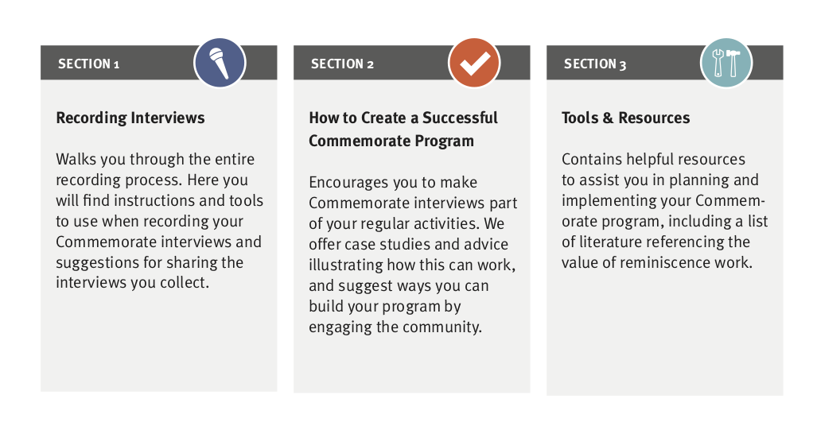

Commemorate
Helping to preserve the stories of those living with memory loss
Brooklyn, NYRole: Project Manager
StoryCorps needed to turn a longstanding program recording the stories of participants with memory loss into a DIY model suitable for use by staff at long-term care facilities. As the lead consultant, I presented an initial program model to healthcare professionals and solicited feedback on its design.
I identified several challenges faced by end-users:
- lackof suitable recording spaces
- unfamiliarity with audio equipment
- difficulty explaining the project to patients and their families
- getting buy-in from colleagues and facility managementa
- connecting the project with other patient activities and company marketing
and focused the training content on addressing these common problems.
I then led in-person and remote instructional sessions as part of a pilot program to evaluate the design of the program model and the accompanying toolkit.
